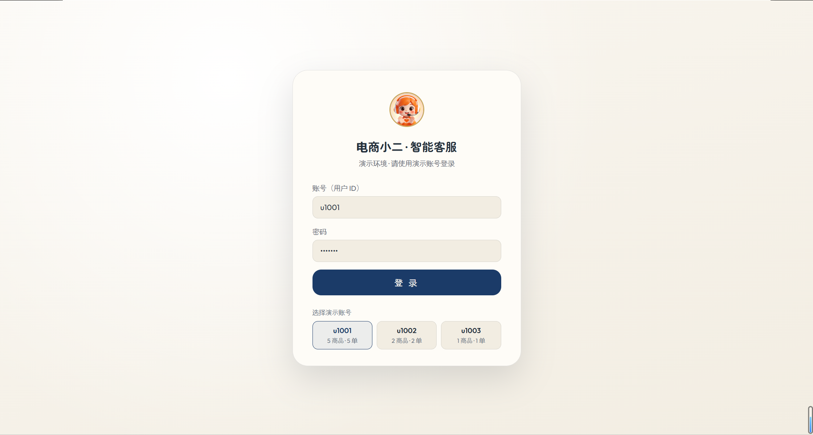
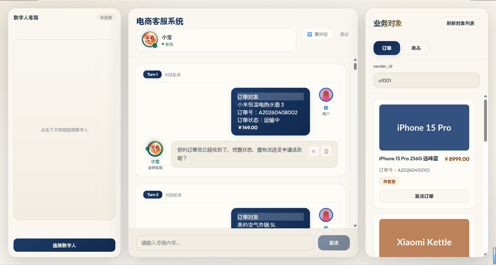
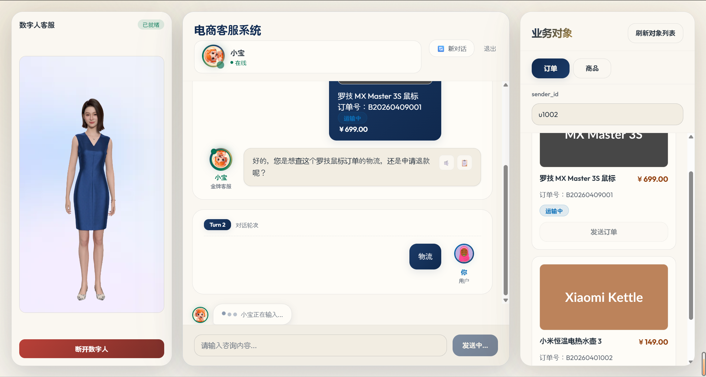
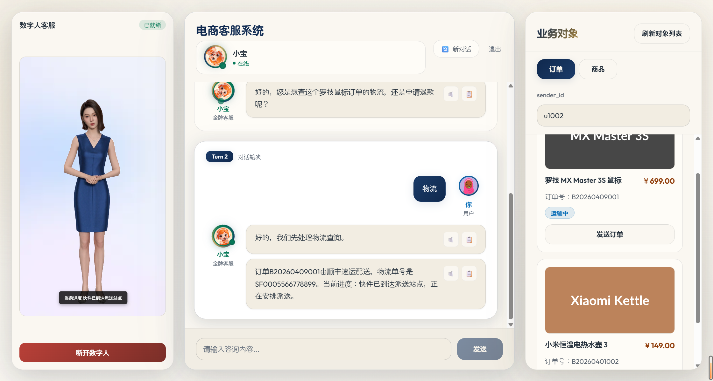

E-Commerce AI Support · Offline Demo
电商小二 · 智能客服
任务 / 知识 / 闲聊三轨分流，订单与商品对象一键注入会话；含 3D 数字人与语音播报通道。
本页为离线演示：录屏与界面截图本地播放，不依赖任何服务器。
录屏内容：演示账号登录 → 选择订单对象 → 多轮业务办理（查单 / 催发 / 售后）→ 三轨分流与知识库应答。全长约 1 分 12 秒，可拖动进度条快进。
数字人通道：接入魔珐星云 3D 驱动与 TTS 语音播报。线上环境当前以静态形象 + 预置话术演示，本视频为真实驱动的完整效果。

登录页 · 三个演示账号一键选择（u1001 / u1002 / u1003）

三栏工作台 · 订单对象注入会话（数字人待连接）

数字人就绪 · 订单上下文随对话进入会话

桌面端全览 · 数字人 / 对话 / 业务对象三栏联动